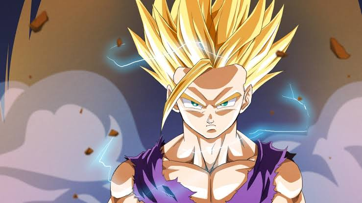

Clear
Son Gohan

Son Gohan is a half-breed Saiyan and one of the most prominent
characters in the Dragon Ball series. He is the elder son of the
series' primary protagonist Goku and his wife Chi-Chi, the older
brother of Goten, the husband of Videl and father to Pan. He is
named after Goku's adoptive grandfather, Gohan. Unlike his father,
Gohan lacks a passion for fighting (although, he does possess a
strong power within him) and prefers to do so only when his loved
ones are threatened. Nevertheless, Gohan fights alongside the Dragon
Team in the defense of Earth for much of his life.
Kaneki Ken
Ken Kaneki is the main protagonist of the Tokyo Ghoul series. He is
currently Touka Kirishima's husband, and the father of Ichika
Kaneki. Previously, he was a student who studied Japanese literature
at Kamii University, living a relatively normal life. However, this
quickly changed after Rize Kamishiro's kakuhou was transplanted into
him and transformed him into a one-eyed ghoul. Kaneki is the first
known artificial one-eyed ghoul. His unique half ghoul state is what
later inspires the idea of the Quinx. After joining Anteiku as a
part-time waiter, he learns how to live as a ghoul and eventually
becomes known as Eyepatch.